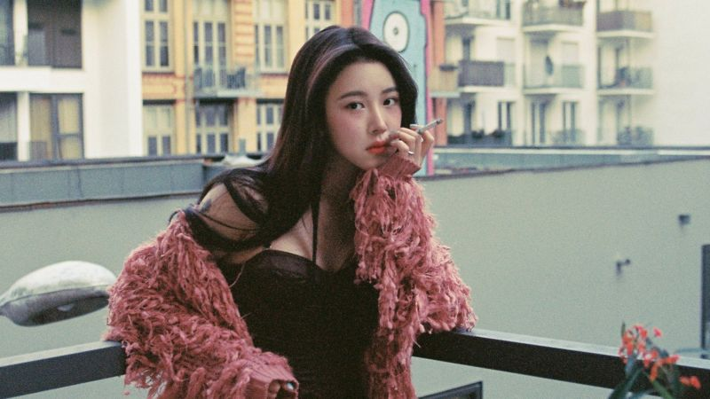

'인터뷰' 2020/03/06 'JYP와 지금 회사, 너무 달라… 두려운 마음 컸다'
by BBC NEWS 코리아 | Photos by 블루바이닐
A dozen 가수 백예린(23)은 지난해 9월 10여 년간 몸담았던 JYP 엔터테인먼트를 나왔다. 그 직후 업계 동료들과 독립 레이블 '블루바이닐'을 차렸다.
그는 스스로에 대해 "굉장히 많이 바뀌었다"고 했다. 지난달 24일 서울 마포구 블루바이닐 사무실에서 백예린을 만났다.
Q. 대형기획사 안에 있었을 때와는 달리 많은 것들이 새롭게 보일 것 같다.
A. 어떻게 부드럽게 이야기를 해야 오해가 없을지 모르겠다.
우선 앨범 제작 과정에서 여러 업무가 이토록 복잡하게 나뉘어 있는지 몰랐다. JYP는 큰 회사다. 수익 창출을 위해 신중해야 하는 부분들이 있다. 타이틀곡, 앨범 규모, 자켓 사진, 실물 앨범 발매 여부 등 하나부터 열까지 너무 많은 고민들을 다른 직원들과 함께 한다.
매 단계마다 회사의 확인을 계속 받아야 하기 때문에 발생하는 시간들이 있었고, 그 시간들이 나로선 기다리기 힘든 경우가 있었다.
블루바이닐에선 내가 조금 더 주체적으로 결정을 내린다. 소통이 빠르다. 프로듀서로서 세세한 부분까지 신경을 쓰고 있다.
--------------------------------------------------------------------------------
점심 시간, 교복을 입고 학교를 몰래 빠져나와 동네 음반 가게로 달려가던 시절이 있었다. 갓 나온 음반을 씨디 플레이어에 조심스레 끼워 넣고 한 곡, 한 곡 천천히 감상하던 시간들이었다.
오늘날엔 점점 더 많은 가수가 실물 앨범 대신 디지털 싱글로 활동을 이어간다. 온라인용 음원만 출시하는 디지털 싱글은 앨범에 비해 제작비가 적게 든다.
백예린의 최근 행보는 이같은 한국 대중음악 시장 흐름과는 많이 다르다.
지난해 12월 그는 씨디 두 장에 18곡을 꽉 채워 들고 나왔다. 백예린을 오랫동안 기다려 온 팬들의 언어로 소위 '선물 같은 앨범'이었다.
Q. 지난해 말 내놓은 'Every letter I sent you'에선 '갖고 있는 걸 다 풀겠다'는 느낌을 받았다. 설레면서도 부담이 컸겠다.
A. 두려운 마음이 매우 컸다. 주변 사람들에게 '너무 무섭다' '잘 될까, 안 될까' 이야기를 했지만 어쨌든 '해야 한다'고 생각해 마음은 먹고 있었다.
곡이 이렇게 많이 모일 거라곤 예상하지 못했다. 19살 때 쓴 곡도 들어갔다. 3년간 써 온 곡들이 모여 '투씨디 앨범'이 된 거다.
답답했던 부분들을 해소하는 과정이었다. 결국은 3년 전에 하고 싶었던 것들을 지금에서야 발매한 셈이 됐다. 이제는 그 공백을 점차 좁혀가고 싶다. 하고 싶은 게 있으면, 바로 준비해서 발매하는 그런 방식으로 말이다.
--------------------------------------------------------------------------------
한국에선 많은 가수가 유년기부터 체계적인 전문 교육을 받는다. 2007년 예능 방송에 출연해 휘트니 휴스턴 노래를 열창하던 열 살 백예린도 이같은 시간을 거쳤다.
Q. 10대를 전부 JYP에서 보냈다. 되돌아보면 어떤 생각이 드나.
A. 어릴 땐 더 숫기가 없었다. 너무 내성적이어서 어머니는 일부러 나를 사람 많은 곳에 끌고 가 춤을 시키기도 했다. 원망스러웠다. 평범한 길이 아니지 않나. 어머니를 슬프게 한 적이 많았다. 스스로도 크게 좌절했다.
JYP에 굉장히 감사한 것 중 하나가 어릴 때 유학을 다녀올 수 있었던 건데, 당시엔 힘들었다. 영어를 한 마디도 못했고, 인종차별 같은 실질적 문제들이 버거웠다.
하지만 그런 경험들을 하고 20대가 되어 '밖'으로 나오니까 당시 경험들이 도움이 되더라. 스스로 또래보다 성숙한 부분도 있다고 생각한다. 지금 행복하다.
--------------------------------------------------------------------------------
소속사 블루바이닐은 백예린이 "자체 제작물 외에는 영상 작업을 하지 않는다"고 밝혔다.
Q. 인지도에 비해 방송 노출이 적다는 이야기가 많다.
A. 카메라를 무서워한다. 뮤직비디오 속 분량도 늘 적다. 영상 콘텐츠에 내가 나오는 게 무섭다. 매체에 나와 알려지는 것 자체도 부담스러웠다. 어릴 적 트라우마가 있다.
그러나 올해는 이를 개선하는 한 해가 됐으면 한다. 자신감 넘치는 사람은 아니지만, 노래를 하고 내 콘텐츠를 만들 때는 조금 더 자신감 있는 모습으로 다가가고 싶다.
Q. 페이스북이나 인스타그램 등 소셜미디어 활동도 적다.
A. 소셜미디어의 나쁜 영향이 많다고 본다. 나부터 소셜미디어 활동 자체를 줄이고 있다.
과거 감정의 골이 너무 깊었을 때엔 이를 해소하기 위해 나를 조금 더 보여주는 방식을 택했다. '그래도 나, 잘 살고 있어' 이런 것 말이다.
지금은 있는 그대로를 보여주고 싶다. 부정적인 영향을 줄 수 있는 게시글은 올리고 싶지 않다. 우리 다들 사는 게 퍽퍽하고 힘들지 않나.
Q. 그럼 힘들 때는 어떻게 마음을 푸나.
A. 나는 일을 열심히 하는 것만으로도 풀린다. 스트레스의 원인은 일에서 오는 열등감이다. 내가 부족하다고 느껴질 때 스트레스를 받기 때문에, 일을 잘하면 금방 금방 풀리더라. 아, 물론 오버워치 게임도 좋아한다.
Q. 몸에 문신 많은 걸로도 유명한데, 저마다 특별한 의미가 있나.
A. 사람들이 예상하는만큼 문신에 대해 진지하게 생각하지는 않는다. 아직까지는 후회하는 것도 없다. 그냥 좋아하는 것들을 새기다보니 이렇게 많아졌다.
Q. 몸에 문신 많은 걸로도 유명한데, 저마다 특별한 의미가 있나.
처음엔 친구와 우정의 징표로 하나를 새겼다. 이후엔 에이미 와인하우스가 너무 좋아서 하나, 밴드 1975가 너무 좋아서 또 하나…. 취향 수집함이라고 할까.
--------------------------------------------------------------------------------
그가 지난해 내놓은 앨범들은 잇따라 음악 차트 1위을 기록했다. 지난달 27일엔 한국대중음악상 3관왕에 올랐다.
많은 이들은 백예린의 음악을 두고 '우울함 속 공감과 치유를 준다'고 평가한다.
Q. 아티스트로서, 또 사람으로서 어떤 성향을 지향하나.
A. 뻔하지만 '사랑이 많은 사람'이 되고 싶다. 어릴 땐 사랑을 못 받았다고 생각하고 늘 사랑을 갈구했다. 결핍된 부분이 많았다. 까칠하고 비관적으로 보였던 것도 따뜻한 사랑을 많이 받아보지 못해 서툴었기 때문이라고 생각한다. '못 받아봐서 못 준 건가' 싶다.
지금은 좋은 사회에 나와 좋은 사람을 많이 만났다. 성인이 되면서 할 수 있는 일도 많아졌다. 음악하는 동료들도 만나고 하니, 그 사람들이 주는 게 다 사랑이더라. 그런 게 나를 굉장히 많이 변화시켰다.
사실 우울이 곡을 쓰는 데 영감을 많이 준다. 거기에서 벗어나려는 사람도 있고, 푹 빠지는 사람도 있는데 나는 우울에서 빠져나오지 못해 많이 허우적거렸다. 혼자만의 생각들을 앨범에 많이 담았다.
이제는 점점 평온해지고 있다. 다음 앨범에는 사회에 나와 만난 사람들에게서 받은 생각과 자극이 담길 예정이다.